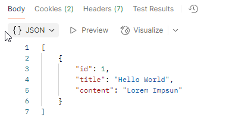
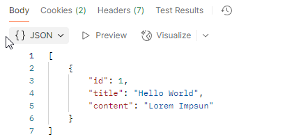

6 - API
Introducción
Apartados:
0:00:00 - Introducción 0:01:25 - Rutas Api 0:20:44 - Controlador Api 0:35:08 - Tipado En Controlador Y Prueba De Funcionamiento 0:50:00 - Api Resource 1:00:57 - Conclusiones
Al trabajar con Laravel, no sólo trabajaremos con Monolito, sino que también lo haremos como BackEnd puro,
- Serviremos los datos a través de una API REST (enlace)
- Es importante comprender la teoría de API Rest, sus verbos y las técnicas y tecnologías más usadas.
- Un segundo sistema, frontal, hace el consumo desde React, VUE...
- CRUD a través de API.
1. Creación API y Rutas Api
- Crear Proyecto
composer create-project laravel/laravel apicrud
INFO Application key set successfully.
Pueden ser entornos complementarios el hecho de tener un monolito y una API Crud en el mismo proyecto, por ejemplo tener un panel de admin con vistas y una API Rest para servir a un cliente.
Laravel 11 install:api
Pequeña actualización para Laravel 11, puesto que no trae el API por defecto.
- Ejecutar en la terminal
︎php artisan install:api- Añadir en el archivo User.php︎
- use Laravel\Sanctum\HasApiTokens
No necesariamente tendremos sistemas puramente backend o sistemas front, pueden ser sistemas híbridos
2. Crear BBDD
En el tutorial, va a crear la base de datos en Mysql llamada apicrud, pero nosotros lo vemos en sqlite
Ruta: .env
Cambiamos Mysql por sqlite y comentamos el resto del bloque
DB_CONNECTION=sqlite
#DB_HOST=127.0.0.1
#DB_PORT=3306
#DB_DATABASE=laravel
#DB_USERNAME=root
#DB_PASSWORD=
3. Modelo Note y la migración
Al igual que en anterior proyecto CRUD que hicimos mediante vistas, vamos a realizar el modelo nota pero esta vez para servirlo con una api rest
php artisan make:model Note --migration
Con lo que obtenemos el OK y las rutas donde se ubican:
INFO Model [app/Models/Note.php] created successfully.
INFO Migration [database/migrations/2023_12_19_063948_create_notes_table.php] created successfully.
Modelo
Vamos al modelo para preparar elementos
Model [app/Models/Note.php]
Cuales serán accesibles? oculta si algo no quieres devolverlo en el JSON de respuesta, con Hidden... cumplimentables / fillable, o cuales vamos a proteger Como solo va a único elemento con título y descripción, por lo tanto usamos el atajo con un array, diciendo que está vacio:
class Note extends Model
{
use HasFactory;
protected $guarded =[]; // si está vacío quiere decir que todos son cumplimentables, ya que este es el opuesto
}
Migración
- Vamos a migrations para preparar la creación de la tabla notes y añadir los campos necesarios.
ruta: Migration [database/migrations/2023_12_19_063948_create_notes_table.php] ∫
/**
* Run the migrations.
*/
public function up(): void
{
Schema::create('notes', function (Blueprint $table) {
$table->id();
$table->string('title', 255); //nuevo campo titulo
$table->string('content', 255)->nullable(); //nuevo campo content
$table->timestamps();
});
}
php artisan migrate
Rutas API, (Enlace)
Ahora ya no van a ir en el archivo web.php sino en el archivo routes/api.php (recuerda haber instalado api desde Laravel 11)
- Al igual que en las rutas web, tenemos un route dispacher para los diferentes métodos.
- Donde se asocian cada una de las URI con su controlador
- Vamos a hacer lo mismo pero en las rutas api.php
Todavía no la vamos a proteger, haremos una api publica, por lo que comentamos la ruta que trae por defecto Laravel con el middleware Auth Sanctum
APIs públicas
Como seguro sabrás, existen múltiples APIs públicas para prácticar y consumir sus datos desde el cliente
Controlador --resource
Si queremos hacer la gestión de un CRUD podemos ahorrarnos la creación de todas las funciones con añadiéndole --resource a la creación del controlador
php artisan make:controller NoteController --resource
Así ya Laravel nos hace todas las funciones HTTP principales, show, update, store..
class NoteController extends Controller
{
public function index()
{
...
Api.php
Hay que incorporar el controlador en la ruta api.php
use app\Http\Controllers\NoteController;
Si hacemos un CRUD, en vez crear de siete rutas, creamos el método estático resource Si por lo que sea hacemos algo más que no sea CRUD , no será necesario incorporarla aquí ya que en principio no utilizaremos vistas.
span
Para poder conocer todas las rutas creadas por resource:
php artisan route:list
GET|HEAD / .........................................................................................................................................................
POST _ignition/execute-solution .................................................. ignition.executeSolution › Spatie\LaravelIgnition › ExecuteSolutionController
GET|HEAD _ignition/health-check .............................................................. ignition.healthCheck › Spatie\LaravelIgnition › HealthCheckController
POST _ignition/update-config ........................................................... ignition.updateConfig › Spatie\LaravelIgnition › UpdateConfigController
GET|HEAD api/note ................................................................................................................ note.index › NoteController@index
POST api/note ................................................................................................................ note.store › NoteController@store
GET|HEAD api/note/create ....................................................................................................... note.create › NoteController@create
GET|HEAD api/note/{note} ........................................................................................................... note.show › NoteController@show
PUT|PATCH api/note/{note} ....................................................................................................... note.update › NoteController@update
DELETE api/note/{note} ..................................................................................................... note.destroy › NoteController@destroy
GET|HEAD api/note/{note}/edit ...................................................................................................... note.edit › NoteController@edit
GET|HEAD sanctum/csrf-cookie ..................................................................... sanctum.csrf-cookie › Laravel\Sanctum › CsrfCookieController@show
Prefijo /api/note
FÍJATE cómo, por defecto, lleva delante la palabra api ya que Laravel le añade ese prefijo, aunque se puede cambiar en Providers/RouteServiceProvider en la función boot
Además de esto, podemos añadir más prefijos desde la ruta en api.php:
En este provider va a diferenciar las rutas API y las rutas WEB y va a establecer el límite de las peticiones. el group indica donde están escritas las rutas de ambas partes.
Límite de solicitudes
Un punto importante es la configuración del límite de solicitudes que describe la función configureRateLimiting Numero de peticiones máximas, por defecto indica que el número es de 60, lo cual es poco para la mayoría de sistemas.
Para nosotros podría valer. Pero en un ejemplo de alguna red social, si estamos chequeando favoritos de una lista de 100, con una sola petición hemos desbordado este límite Es una limitación por cada uno de los usuarios
Modificado
En la versión actual no lo carga por defecto, para poder investigar e implementarlo, debesconsultar la documentación oficial
Controlador Api (enlace)
NoteController / Función index
ruta del fichero: API/Http/Controllers/NoteControllers
- Lo primero, incluir las librerías del modelo.
Para poder hacer uso del ORM Eloquent, el que trae Laravel por defecto aunque hay otras opciones: Ya veremos cuándo es interesante otros
Primero agregamos la librería del modelo
use App\Models\Note;
En Index, creamos variable con todos los elementos y la devolvemos en formato JSON
public function index()
{
//recuperamos todos los elementos
$notes = Notes::all();
//ahora ya no devolvemos una vista (retun view) si no que directamente enviamos esos datos mediante un formato de API RESTFUL con JSON
return response()->json($notes, 200 );
/* JSON Le devolvemos:
//datos
//mensaje de estado, 200 = todo OK
//valor de cabecera (opcional)
*/
}
Create
Podemos usar las reglas de validación anteriores con la NoteRequest más específica
NoteRequest
Vamos a generar una NoteRequest específica en lugar de la Request genérica para definir qué y cómo queremos recibir los datos, esto no es obligatorio pero si recomendable para separar las validaciones de nuestro controlador
php artisan make:request NoteRequest
Y la genera en la ruta:
INFO Request [app/Http/Requests/NoteRequest.php] created successfully.
- NoteRequest:
Ruta: [app/Http/Requests/NoteRequest.php]
Cambiamos a true la función authorize:
return true; //Lo cambiamos a true
Y customizamos la petición en las reglas::
public function rules(): array
{
return [
'title' => 'required|max:255|min:3', //pedimos un minimo, maximo y que sea requerido el título
'content' =>'nullable|max:255|min:3' //pedimos un minimo, maximo y que sea requerido el título
];
}
IMPORTANTE: Indicar la librería en el controlador
use App\Http\Request\NoteRequest;
Una vez hecho esto, ¿Cómo se almacena?
Función store (create),
En el caso de una API, la función Create y Store sería el mismo en una api, se usa store, ya que create es para las vistas mostrar un formulario Devolvemos el mensaje correcto, deberíamos de pasarle también el elemento creado por convención pero no lo hace
public function store(NoteRequest $request)
{
//
Note::create($request->all());
return response()->json([
'success' => true
],201); // El estado 201 corresponde a la creación correcta de u nuevo elemento
}
Función show
Busca un elemento con su ID y lo devuelve
public function show(string $id)
{
//Busca un elemento con su ID y lo devuelve
$note= Note::find($id);
return response()->json($note, 200);
}
Función update
Al igual que create, la función edit no es necesaria en API.
Cambiamos la request por NoteRequest
public function update(NoteRequest $request, string $id)
{
$note= Note::find($id);
//podemos usar el Note::update
//O para ver la opción directa, lo hacemos:
$note->title= $request->title;
$note->content= $request->content;
$note->save(); // Si lo hacemos así, necesitamos guardar
return response()->json([
'success' => true
],204); // El estado 204 corresponde a la creación correcta de u nuevo elemento
}
Función destroy
public function destroy(string $id)
{
//Buscamos el elemento a borrar
$note= Note::find($id);
return response()->json([
'success' => true
],200); // El estado 204 corresponde a la creación correcta de u nuevo elemento
}
Ya la hemos definido todas las funciones, ahora vamos a ver cómo mejorar nuestro controlador de recurso.
Tipado En Controlador Y Prueba De Funcionamiento (enlace)
Refactorización sobre el controlador construido, hay dos enfoques:
- mostrado del tipado de las acciones Empecemos por aquí que es la sencilla, vemos una construcción extensa de cada valor devuelto, comentarios con return...
- Cambia a usar el tipado con el nuevo formato:
/**
* Display a listing of the resource.
*/
Y lo cambiamos por lo siguiente sin comentarios, así con el resto:
public function index():JsonResponse
Añadiendo las siguientes librerias al controlador:
use Illuminate\Http\JsonResponse;
Construcción más limpia. También puede mejorar el contenido en una sola línea con:
return response()->json(Note::all(), 200 );
Si bien quita algo de documentación ,queda un código más límpio
Transformación formato de respuesta
Lo siguiente es el control de la respuesta.Podría ser interesante modificar el contenido que quiero devolver
- tipo de respuesta que vamos a ofrecer
- Podemos verlo más adelante con los api resources, añadiendo más contenido, ocultando...
Primero vamos a comprobarla Por convención, se devuelve el recurso que se acaba de crear;
Así que añade a la respuestas de creación y actualización para devolver el recurso y facilitar la vida al cliente.
'data' => $note
Peticiones de cliente (Thunder Client)
Haremos la prueba con la extensión VSC Thunder Client, si bien existen otras conocidas como Postman.
Vamos a probarlo, crearemos una colección en esta extensión para probar la APi Lo primero, arrancamos el servicio
php artisan serve
https://youtu.be/DvzLf1SMASo?t=2683 Probamos todos los endpoints..
En la pestaña lateral izquierda, pulsamos sobre ThunderClient y creamos una new Request (Símbolo rayo)
- Incluimos el tipo de petición (POST)
- Añadimos la ruta hacia /api/note
http://localhost:8000/api/note - Admitimos tipo de contenido Json
y en Body, añadimos en formato JSON los datos que vamos a solicitar crear una nota:
{
"title":"Hello World",
"content": "Lorem Impsun"
}
Vemos cómo lo hace bien, probamos el resto
Index (GET)
Update (PUT)
- Posible mejora AL DEVOLVER EL UPDATE, lo hace bien pero no lo muestra
delete
Collections para Almacenar peticiones en ThunderClient
Es muy útil guardar las diferentes peticiones creadas con ThunderClient para su posterior prueba.
php artisan route:list
Es importante apreciar los diferentes verbos de una API Rest y cómo hay rutas como api/note que hacen acciones diferentes con verbos diferentes aún usando la misma ruta como api/note
PROTECTED HIDDEN
En el modelo, especificamos los campos que NO queremos mostrar
protected $hidden =['created_at', 'updated_at'];
 

Ahora al probar el index (GET /api/note) , ya no nos devuelve esos campos en la petición Ya controlamos cómo vamos a devolver los datos
¿Cómo puyedo modificar los datos para devolverlos?
Si están relacionados, cómo devolvemos el elemento completo y no su ID??
Para eso están los API REsources, que establecen capa intermedia para que los modelos construyan los datos antes de devolverlos y pder así "cocinarlos"
Guarda tu v1
Para tener una mejor trazabilidad de lo realizado, puedes optar por hacer una copia de tu proyectoapicrud para poder ver después, ya que vamos a realizar cambios a las funciones de su controlador.
Api Resources (enlace)
Como hemos dicho, es muy interesante modificar el formato de lo que vamos a devolver,
- pensemos por ejemplo en una clave foránea, yo no quiero devolver un ID de la clave, quiero devolver el elemento relacionado.
- O hay datos que si no das algo más de contexto, no se comprenden
Por tanto, vamos a realizar lo anterior mediante un archivo Resource, para ello ejecutamos
php artisan make:resource NoteResource
Esto generará una nueva carpeta y una nueva clase en app\Http\Resources\NoteResource
1 NoteResource
- Vamos a trabajar con esta clase para crear peticiones personalizadas a las que teníamos anteriormente.
- Por defecto devuelve los elementos de la tabla, podemos comentar la línea que viene.
Si nos fijamos en el ejemplo hemos añadido un campo example que no está definido en el modelo de Note, pero aún así funcionará y cuando hagamos una consulta saldrá también este campo.
class NoteResource extends JsonResource{
public function toArray($request): array
{
return [
'id' => $this ->id,
'title' => 'Title: ' . $this->title,
'content' => $this->content,
'example' => 'This is an example'
];
}
}
2 NoteController
- Una vez hecho lo anterior debemos irnos a nuestro controlador desarrollado anteriormente y debemos importar lo siguiente:
use App\Http\Resources\NoteResource;
use Illuminate\Http\Resources\Json\JsonResource;
Con esto podremos trabajar con respuestas Resource, con lo que vamos a devolver colleciones de los recursos. Modificamos las funciones de nuestro controlador
* Funcion Index
- Hay que incluir la librería
use Illuminate\Http\Resources\Json\JsonResource;
public function index():JsonResource //Hemos cambiado de tipo devuelto, de JsonResponse a JsonResource
{
return NoteResource::collection(Note::all());
}
* Funcion Store
- Aunque vamos a devolver una JsonResponse, vamos a modificar e incluir el data para NoteResource
public function store(NoteRequest $request):JsonResponse
{
$note = Note::create($request->all());
return response()->json([
'success' => true,
'data' => new NoteResource($note)
],201); // El estado 201 corresponde a la creación correcta de u nuevo elemento
}
-
Funcion Show
Aquí igual, vamos a devolver ahora una JsonResource:
* FunciónUpdate
Aquí, como en el Store, cuando devolvemos el data, ahora devolvemos el note Resource:
public function update(NoteRequest $request, string $id):JsonResponse
{
$note= Note::find($id);
$note->title= $request->title;
$note->content= $request->content;
$note->save(); // Si lo hacemos así, necesitamos guardar
return response()->json([
'success' => true,
'data' => new NoteResource($note)
],204);
}
Comprobar con cliente ThunderClient/Postman
Si hemos implementado correctamente lo anterior deberían hacerse peticiones correctamente y al ejecutarn por ejemplo el index vemos que nos devuelven Notas con el campo example.
Conclusiones
Aquí ya somos capaces de devolver datos tanto en vista como en API.